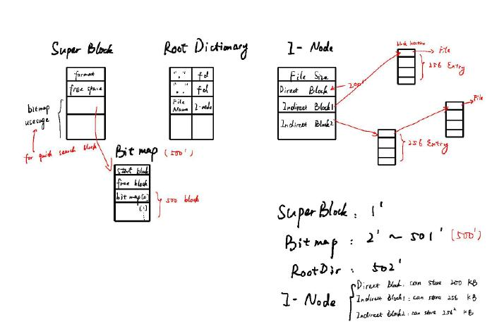

最后的大作业是实现一个文件系统，我以UNIX的文件系统为标准，实现了简单的文件系统和API接口。
本文的所有代码已经上传我的Github。
要求
- 设计一个文件系统，最多可以容纳
5000个文件，设备容量为250MB,单个文件最大容量为50MB,提供目录树功能，文件名最长为50个字符，每块大小1KB。 - 本实验采用文件来模拟磁盘，采用
dd命令创建文件，例如：dd if=/dev/zeroof=simulated_device bs=1024 count=250000将创建一个包含250000块文件名为simulated_device的文件。(这个文件可以满足测试程序中所有测试程序的空间需要) - 本实验已经给出测试文件，最大测试文件为50M。
思考
- 实验要求很简单，就是实现一个普通的文件系统，而且实现方式不限，使用提供的
write_block等接口来模拟低层的磁盘操作。 - 设计一个文件系统，最主要的是思考如何布局。无论什么文件系统，都要包含目录树、文件信息等功能。
- 文件的实现书上介绍了几种常见的方法：
- 连续分配
- 最简单的分配方案，将每个文件存放在连续的磁盘数据块中。
- 易于实现，性能不错，但会造成大量外碎片（在多个小文件的时候经常发生）
- 带有文件分配表的链表结构
- 把每一个磁盘块中的链表指针抽取出来，单独组成一个表格，放在内存中。
- 这样的坏处是整个文件分配表必须都放在内存，太占用空间。
- I-Node
- 大名鼎鼎的
i-node登场啦。此i-node节点列出了文件的属性和各个数据库的磁盘地址，在给定一个i-node之后，就能找到该文件的所有信息。 - 只有当一个文件被打开时，才需要把它的
i节点装入内存。 - 当
i-node存储的磁盘地址不够时，我们还可以使用多级间接块（indirect block）来描述更多的磁盘地址。
- 大名鼎鼎的
- 连续分配
- 目录
- 相对来说，目录的实现就简单多了。目录也可以理解为一种特殊的文件，UNIX中的目录非常简单，每一项（entry）只包含
文件名和i-node节点号两个信息。
- 相对来说，目录的实现就简单多了。目录也可以理解为一种特殊的文件，UNIX中的目录非常简单，每一项（entry）只包含
- 空闲块管理
- 如何迅速知道磁盘中的空闲块以及剩余容量呢？
- 一种方法是使用链表，但会占用大量空间。
- 更常用的方法是使用位图（bitmap）来管理，已经分配的块用1表示，未分配的用0表示，每个块只占1个byte。
- SuperBlock
- 我们还需要一个
SuperBlock作为文件系统的初始块。它应该包含文件系统初始化信息、位图地址、根目录地址等等，以便让系统将文件系统加载进内存。
- 我们还需要一个
实现
本项目使用了SuperBlock、Bitmap，以及i-node来实现文件系统。
- Superblock
- 是否初始化
- 磁盘剩余空间（用于快速访问，了解该文件是否能放入磁盘）
- bitmap信息（每个位图的使用情况）
- 存储在第一块block中，当初始化时自动加载。
- Bitmap
- 按理来说，
Bitmap中的每一个byte来代表一个块。但用byte操作不太直观，因此本项目使用short类型代替（会多浪费不少空间，但总占比空间依然不多） - 由于我们由
250000个块，本项目设计每个Bitmap包含500个块的位图信息，其余地址用于存储起始磁盘块地址、剩余块多少。 - 因此，我们需要
500个Bitmap，存储在第2~501个磁盘块中。
- 按理来说，
- Root目录
Root目录也必须在文件系统初始化时加载和初始化，因此我们将它分配在502磁盘块上。
i-node- 在每个
i-node中，我们设计了以下属性： - 文件大小
- 创建、修改时间
- 直接块（200个，可以存储200KB的信息）
- 一级间接块（1个，可以存储256KB的信息--一条地址4bytes）
- 二级间接块（1个，可以存储256*256KB的信息，完全足够我们用了）
- 在每个
总结下来，我们的文件系统大体框架如下图所示：

缓存
解决了文件系统的大体框架问题，接下来我们就要想缓存的问题了。因为我们不可能每次写都直接写到磁盘、每次读都直接从磁盘中读，这样一个block（1KB)一个block的读实在是太慢了。因此我想出了以下几个方法：
- 每次
write只写到缓存，只有当文件close的时候才真正写到内存。这种方法的好处是无论如何读写都很快，但当文件很大的时候非常占用内存。 - 给内存分配一块专门用作文件读写的缓冲区，当文件大小小于缓冲区时，就直接将文件存储在缓存区中，当文件大于此大小，就将多余的部分存储在磁盘中。
理论上来说，第二种方案肯定是更好的，因为作为操作系统的一部分，肯定不希望占用过多的内存。但本项目为了简单，只采用了第一种方案。
代码逻辑
结构设计
因为文件系统涉及的结构层次较多，为了方便阅读代码，我整理了函数的逻辑如下：

可以看见，对于块操作来说，主要涉及到块操作的读写、查看文件、新建空闲块、查找空闲块等等。这些函数作为接口像上一层调用。
函数声明
首先我们需要进行声明全局变量的结构体，这些变量有助于我们更方便的访问文件信息。
所有的全局变量以及函数声明都在p5.h文件中：
#ifndef P5_H
#define P5_H
#include <time.h>
#define MAX_FILE_NAME_LENGTH 200
#define MAX_OPEN_FILES 10
/* file API */
extern int my_open(const char *path);
extern int my_creat(const char *path);
extern int my_read(int fd, void *buf, int count);
extern int my_write(int fd, const void *buf, int count);
extern int my_close(int fd);
extern int my_remove(const char *path);
extern int my_rename(const char *old, const char *new);
extern int my_mkdir(const char *path);
extern int my_rmdir(const char *path);
extern void my_mkfs();
/* provided by the lower layer */
#define BLOCKSIZE 1024
/* not used in any declaration, just a reminder that each block is 1KB */
/* and may be useful inside the code. */
typedef char block[BLOCKSIZE];
extern int dev_open();
extern int read_block(int block_num, char *block);
extern int write_block(int block_num, char *block);
/* provided by block function */
#define MAX_PER_BITMAP 500 /* max block covered of one bit map */
#define MAX_DIRENTRY 18 /* max directionary entry each block */
#define BITMAP_NUM 500 /* number of bit map needed*/
#define ROOT_DIR_BLOCK 502 /* number of bit map needed*/
#define BITMAP_START 2 /* where bitmap store in disk */
#define INODE_DIRECT_MAX 200 /* inode direct block max 200 */
#define INODE_DIRECT1_MAX 256 /* inode direct block max 200 */
/* super block struct, 1020 KB */
typedef struct SuperBlk
{
int is_format; /* is this file system init? */
short bitmap_usage[BITMAP_NUM + 5]; /* usage of each bit map ,begin with index 2 */
int free_space; /* free space */
} SUPERBLK;
/* each Dictionary Entry has 56 bytes, a block can have 18 entry */
typedef struct DirEntry
{
char name[50]; /* file name max length */
int i_node; /* the i-node of file */
} DIRENTRY;
/* each Dictionary has 18 entry, overall 1012 bytes */
typedef struct Dir
{
int in_use; /* how many dir is using */
DIRENTRY entry[MAX_DIRENTRY];
} DIR;
/* inode size: 820 bytes */
typedef struct inode
{
time_t ctime; /* last change time (size : 8 bytes)*/
int i_size; /* file size:(bytes) */
int dir_block[INODE_DIRECT_MAX]; /* direct block */
int indir_block_1; /* indirect block 1 */
int indir_block_2; /* indirect block 2 */
} INODE;
/* need 500 bitmap block for 250000 block
* each bitmap 1008 btytes
*/
typedef struct bitmap
{
int start_block; /* start block of the bit map */
int free_block; /* free block in this bitmap */
short bitmap[MAX_PER_BITMAP]; /* bit map */
} BITMAP;
typedef int INDIR_BLOCK[INODE_DIRECT1_MAX]; /* indirect block, a block can fit 256 block pointer */
extern int Write_Superblk(SUPERBLK sb);
extern int Write_Dir(int block_num, DIR dir);
extern int Write_Bitmap(int block_num, BITMAP btmp);
extern int Write_Inode(int block_num, INODE i_node);
extern int Write_Inode_block(int block_num, INDIR_BLOCK block1);
extern void clean_pathname();
extern int parse_path(const char *Path);
extern int find_file(int dir_num);
extern int bitmap_search_block(BITMAP *tmp);
extern int find_free_block();
extern int mk_new_dir(int parent_dir_disk_num);
extern int mk_new_inode();
extern void free_space(int free_block_num);
extern void free_indirect_block1(int indirect_block1_location);
extern void free_inode(int inode_block_num);
extern void read_file(int disk_num, void *buf, int length);
extern int read_indir_block1(int block1_disk_num, void *buf, int left);
extern int read_from_fpBuf(int fp_index, int count, void *buf);
extern int read_to_fpBuf(INODE inodeTmp, int fd_index);
extern void write_file(int disk_num, void *buf, int length);
extern int write_indir_block1(int block1_disk_num, void *buf, int left);
extern int write_fpBuf_to_disk(int fd, INODE InodeTmp, int fd_index);
/* global variables */
extern char PathName[5][20]; /* globel Path Name parsed */
extern SUPERBLK SuperBlock; /* superblock will be used frequently */
extern DIR RootDir; /* Root Dir will be used frequently, max 18 entry */
extern INODE tmpInode;
extern int OpenFP[50]; /* at most 50 fp */
extern char *OpenFP_buffer[50]; /* the buffer of fp */
extern char *OpenFP_buffer_old[50]; /* the buffer of fp,the fp position unchanged */
extern char TmpBuf[BLOCKSIZE]; /* used for read/wirte block from disk */
#endif /* P5_H */
磁盘操作接口
因为我们是模拟在磁盘上操作，因此我们需要一个提供的接口，来模拟直接对于磁盘的操作，这些函数定义在block.c中，函数实现十分的简单：
#include <sys/types.h>
#include <sys/stat.h>
#include <fcntl.h>
#include <unistd.h>
#include <stdio.h>
#include "p5.h"
#define BLOCKSIZE 1024
/* only open the file once */
static int fd = -1;
static int devsize = 0;
/* returns the device size (in blocks) if the operation is successful,
* and -1 otherwise */
int dev_open ()
{
struct stat st;
if (fd < 0) {
fd = open ("simulated_device", O_RDWR);
if (fd < 0) {
perror ("open");
return -1;
}
if (fstat (fd, &st) < 0) {
perror ("fstat");
return -1;
}
devsize = st.st_size / BLOCKSIZE;
}
return devsize;
}
/* returns 0 if the operation is successful, and -1 otherwise */
int read_block (int block_num, char * block)
{
if (block_num >= devsize) {
printf ("block number requested %d, maximum %d", block_num, devsize - 1);
return -1;
}
if (lseek (fd, block_num * BLOCKSIZE, SEEK_SET) < 0) {
perror ("lseek");
return -1;
}
if (read (fd, block, BLOCKSIZE) != BLOCKSIZE) {
perror ("read");
return -1;
}
return 0;
}
/* returns 0 if the operation is successful, and -1 otherwise */
int write_block (int block_num, char * block)
{
if (block_num >= devsize) {
printf ("block number requested %d, maximum %d", block_num, devsize - 1);
return -1;
}
if (lseek (fd, block_num * BLOCKSIZE, SEEK_SET) < 0) {
perror ("lseek");
return -1;
}
if (write (fd, block, BLOCKSIZE) != BLOCKSIZE) {
perror ("write");
return -1;
}
if (fsync (fd) < 0)
perror ("fsync"); /* but return success anyway */
return 0;
}
块函数实现
对于处理块函数，我们单独使用一个blkFun.c文件进行处理，同时，这里也定义了之后会使用的全局变量。
由于我写了比较详细的注释，这里就不再赘述，请移步我的Github进行查看。
API实现
最后就是实现要求的read、write等接口，这一部分并没有那么的困难，但要注意的是，要及时将更新过的bitmap等信息写到磁盘中去。
测试函数
本项目有一个专门的测试函数，此测试函数将文件从几kb到50M都测试了一遍，而且通过不同的方式，看读写操作是否成功，测试函数如下：
#include <stdio.h>
#include <stdlib.h>
#include <string.h>
#include "p5.h"
char buffer0[] = "hello world";
char buffer1[1000]; /* one thousand */
char buffer2[10000]; /* ten thousand */
char buffer3[100000]; /* a hundred thousand */
char buffer4[1000000]; /* a million */
char buffer5[50 * 1024 * 1024]; /* max size, 50MB */
static int test_file(char *path, char *buffer, int size, int max_size);
static void close_remove_file(char *path, int fd);
int main(int argc, char **argv)
{
int first_test = 1;
int fd0, fd1, fd2, fd3, fd4, fd5;
int i;
int max_size = sizeof(buffer5);
if ((argc > 1) && (atoi(argv[1]) > 0))
max_size = atoi(argv[1]);
printf("testing files up to %d bytes\n", max_size);
my_mkfs();
if (my_mkdir("/foo") < 0)
{ /* already tested before */
printf("second or subsequent test\n");
first_test = 0;
}
if (my_rmdir("/foo") < 0)
{
if (first_test)
{
printf("unable to rmdir /foo\n");
exit(1);
}
}
if (!first_test)
printf("succeeded in removing directory /foo\n");
if (my_mkdir("/foo") < 0)
{ /* already tested before */
printf("unable to mkdir /foo, aborting\n");
exit(1);
}
printf("succeeded in creating directory /foo\n");
if (my_open("/foo/bar") >= 0)
{ /* file should not exist */
printf("error, opened nonexistent file /foo/bar, aborting\n");
exit(1);
}
printf("my_open correctly failed to open non-existent file /foo/bar\n");
fd0 = test_file("/foo/bar0", buffer0, sizeof(buffer0), max_size);
if (fd0 >= 0)
if (my_close(fd0) < 0)
{
printf("error, unable to close /foo/bar0, aborting\n");
exit(1);
}
else
{
printf("successfully closed /foo/bar0\n");
}
/* some directory operations */
if (my_rename("/foo/bar0", "/qqq") < 0)
{
printf("error, unable to rename /foo/bar, aborting\n");
exit(1);
}
printf("successfully renamed /foo/bar0 to /qqq\n");
if (my_remove("/qqq") < 0)
{
printf("error, unable to remove /qqq, aborting\n");
exit(1);
}
printf("successfully removed /qqq\n");
if (my_mkdir("/foo/bar") < 0)
{
printf("unable to create subdirectory /foo/bar, aborting\n");
exit(1);
}
printf("successfully created directory /foo/bar\n");
if (my_rmdir("/foo/bar") < 0)
{
printf("unable to remove subdirectory /foo/bar, aborting\n");
exit(1);
}
printf("successfully removed directory /foo/bar\n");
printf("-------------------\n");
/* repeat the test on as many of the larger files as appropriate */
fd1 = test_file("/foo/bar1", buffer1, sizeof(buffer1), max_size);
fd2 = test_file("/foo/bar2", buffer2, sizeof(buffer2), max_size);
fd3 = test_file("/foo/bar3", buffer3, sizeof(buffer3), max_size);
fd4 = test_file("/foo/bar4", buffer4, sizeof(buffer4), max_size);
fd5 = test_file("/foo/bar5", buffer5, sizeof(buffer5), max_size);
close_remove_file("/foo/bar5", fd5);
close_remove_file("/foo/bar2", fd2);
close_remove_file("/foo/bar4", fd4);
close_remove_file("/foo/bar1", fd1);
close_remove_file("/foo/bar3", fd3);
printf("tests completed successfully\n");
exit(0);
}
static int test_file(char *path, char *buffer, int size, int max_size)
{
int i, large, fd;
if (size > max_size) /* skip larger tests */
return -1;
large = (size > 20); /* small file is "hello world" */
/* create a file, check that it was saved */
if (large)
{
for (i = 0; i < size; i++)
buffer[i] = i % 128;
buffer[0] = 0x77; /* change value in location 0 */
if (size / 2 > 1025)
buffer[1025] = 0x99; /* change a value after the first block */
if (size / 2 > 1024 * 256 + 21)
buffer[1024 * 256 + 21] = 0x42; /* after first block of blocks */
}
if ((fd = my_creat(path)) < 0)
{ /* file should not exist */
printf("error, unable to recreate %s, aborting\n", path);
exit(1);
}
printf("successfully created file %s\n", path);
if (my_write(fd, buffer, size) != size)
{
printf("error, unable to write %d bytes to %s, aborting\n", size, path);
exit(1);
}
printf("successfully wrote %d bytes to file %s\n", size, path);
if (my_close(fd) < 0)
{
printf("error, unable to close %s, aborting\n", path);
exit(1);
}
printf("successfully closed file %s\n", path);
/* reset the buffer contents to the values that are easy to check */
if (large)
{
buffer[0] = 0;
if (size / 2 > 1025)
buffer[1025] = 1025 % 128;
if (size / 2 > 1024 * 256 + 21)
buffer[1024 * 256 + 21] = (1024 * 256 + 21) % 128;
}
/* now read and write */
if ((fd = my_open(path)) < 0)
{ /* file should exist now */
printf("error, unable to reopen %s, aborting\n", path);
exit(1);
}
printf("successfully reopened file %s\n", path);
if (my_write(fd, buffer, size / 2) != size / 2)
{
printf("error, unable to rewrite part of %s, aborting\n", path);
exit(1);
}
printf("successfully wrote initial %d bytes to file %s\n", size / 2, path);
/* clear top part of buffer */
for (i = size / 2; i < size; i++)
buffer[i] = 0;
/* now replace it with the contents of what we read */
if (my_read(fd, buffer + size / 2, size - size / 2) != size - size / 2)
{
printf("error, read failed for %s, aborting\n", path);
exit(1);
}
printf("successfully read final %d bytes from file %s\n",
size - size / 2, path);
if (my_close(fd) < 0)
{
printf("error, unable to close %s, aborting\n", path);
exit(1);
}
printf("successfully closed file %s after reading\n", path);
/* clear the bottom half of the buffer, and read it from the file again */
for (i = 0; i < size / 2; i++)
buffer[i] = 0;
if ((fd = my_open(path)) < 0)
{
printf("error, unable to re-reopen %s, aborting\n", path);
exit(1);
}
printf("successfully re-reopened file %s\n", path);
if (my_read(fd, buffer, size / 2) != size / 2)
{
printf("error, read failed for initial %d bytes of %s, aborting\n",
size / 2, path);
exit(1);
}
printf("successfully read initial %d bytes from file %s\n", size / 2, path);
if (large)
{
for (i = 0; i < size; i++)
{
if (((buffer[i]) & 0xff) != ((i % 128) & 0xff))
{
printf("error at index %d (of %d), value %d, expected %d\n",
i, size, ((buffer[i]) & 0xff), ((i % 128) & 0xff));
exit(1);
}
}
}
else
{
if (strcmp(buffer, "hello world") != 0)
{
printf("error, value written was 'hello world', value returned %s\n",
buffer);
exit(1);
}
}
printf("test completed successfully on a file of size %d\n", size);
return fd;
}
static void close_remove_file(char *path, int fd)
{
if (fd >= 0)
{
if (my_close(fd) < 0)
{
printf("error, unable to close %s, aborting\n", path);
exit(1);
}
printf("successfully closed %s\n", path);
if (my_remove(path) < 0)
{
printf("error, unable to remove %s, aborting\n", path);
exit(1);
}
printf("successfully removed %s\n", path);
}
}
C语言
通过本实验，发现自己对于C语言很多东西还是掌握的不够好，总结如下：
- 结构体变量名不是指针
- 读取数据，只需要将char *类型转换为所需要的类型，即可正确读写（例如结构体）
- 可变参数
- 使用
strtok切分字符串，注意是对原字符串进行处理，因此不能使const char *类型。 - 字符串测长度，
strlen与sizeof的区别
- 每一次都记得要清空
Path_name中的值 - 注意
creat之后，i-node没有初始化，不能读，可以通过block_num判断（若没有初始化，则为0） - 读文件，直接将其全部缓存到内存，然后保存一个
fd偏移量。
ToDo
总的来说本次实验自己花了将近20个小时，写的还是比较顺利，没有出现过多的bug。但当我写完之后，发现很多细节自己还是没想清楚。本来1000多行的代码量也不大，只是需要自己在写代码之前把框架搭好，这比写代码实现更重要。
- 缓存的实现方式有问题，需要改成将缓存区大小有限制，同时，在
write时候，需要将文件完全写到磁盘中。 - 寻找空闲块的操作太浪费时间。我目前实现的是查找一个空闲块的操作，但是这样很低效，应该实现一次可以申请多个空闲块的操作。
- 同时，在寻找空闲块时，不应该从头开始找，而是使用二次匹配等算法。当然，助教说工业界常用的方法是使用线性hash，可以尝试一下，应该速度会提升不少。
- 使用C++重构代码，可以避免很多代码冗余的现象（函数指针、template的使用）
参考资料
- Operating System:Design and Implementation,Third Edition